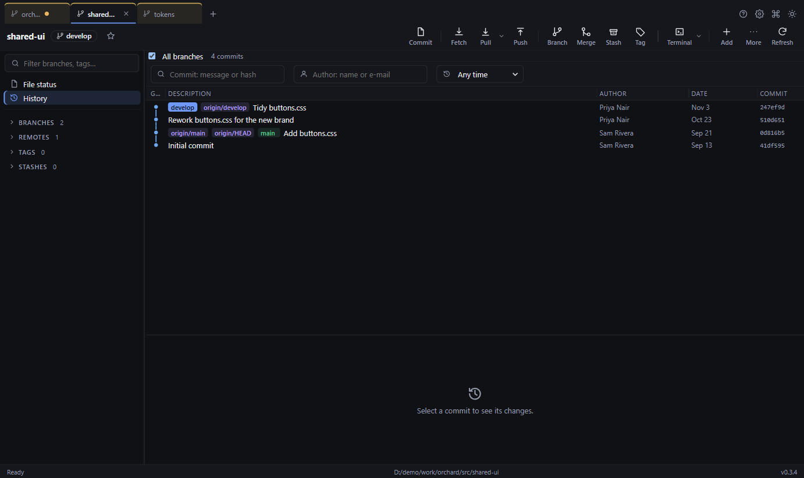
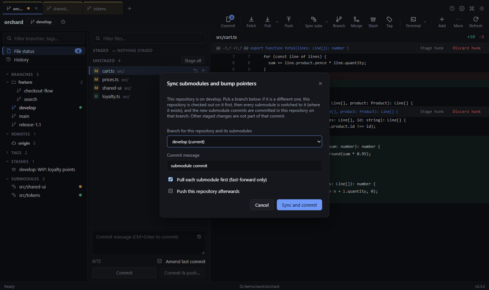

9. Submodules

A submodule is another repository embedded inside this one (the sidebar's Submodules list).
- Dot colours: green = checked out at the expected commit · amber = it is at a different commit than the parent expects · grey = not downloaded yet · red = in conflict.
- Open one: double-click it (or right-click → Open in new tab). It opens as its own tab directly to the right of its parent's tab, where you can commit, branch and push as with any repository.
- A grey (not-initialised) submodule is downloaded for you when you open it (Initialise & open).
- Update all submodules (right-click any submodule, or the palette) checks out every submodule at the commit the parent expects.
- Switch the submodules to the same branch. When the submodules have a branch with the same name as the one you use in
the parent (for example
release-2), right-click the branch → Check out + switch submodules, or Switch submodules to this branch for the branch that is already checked out, or press Sync subs in the toolbar (it uses the current branch). The arrow beside the button also offers Sync and pull: after switching, each submodule that was switched is pulled (fast-forward only, so nothing is ever left half-merged). A submodule without an upstream branch is switched but not pulled, and a failed pull is reported while the others carry on.- Each downloaded submodule moves to the branch of that name if it exists there, either locally or as a remote branch (a local tracking branch is created). Submodules that are not downloaded, or that do not have that branch, are skipped.
- A submodule that cannot switch (for example because it has uncommitted changes) is reported, and the others still switch. Nothing is forced.
- Treeline does not fetch first. If the branch exists only on the server, Fetch inside that submodule.
- The parent then shows the submodules as changed (amber); commit that to record their new versions.
- Sync and bump pointers… (the arrow beside Sync subs, or right-click a tab) shows the branch this repository is on and a drop-down of branches (the current one by default). Choose another branch and the parent is checked out on it first, then the submodules follow, so both end up on the same branch; optionally pulls each, then commits the new submodule commits in the parent with a message you write (it suggests submodule commit). Only the submodule pointers are committed; other staged changes are left alone. Tick Push this repository afterwards to push the commit straight away (it uses the branch's remote, or the first remote if the branch has none).
- After you commit inside a submodule, the parent shows the submodule as changed (it now points to a new commit). Stage and commit that in the parent to record the new version.
